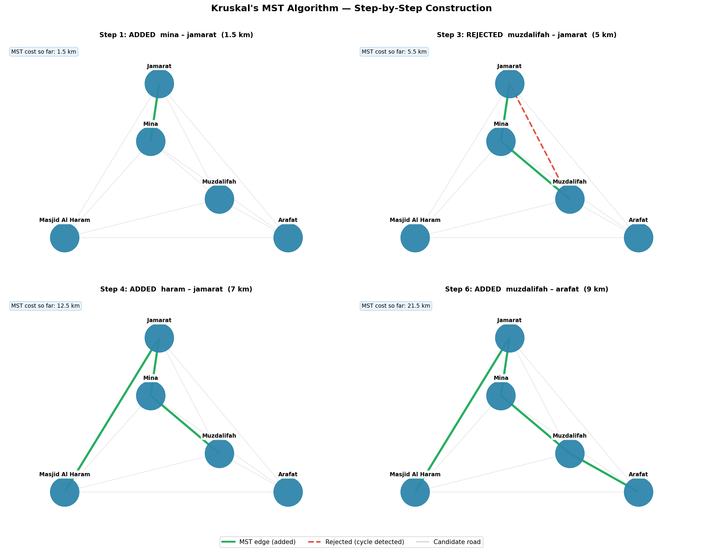
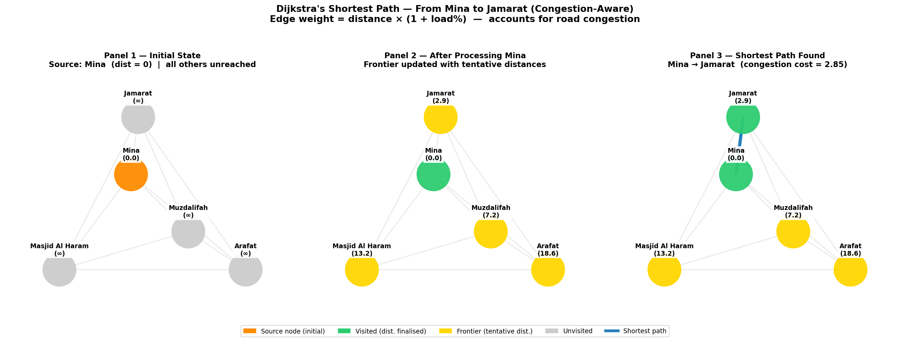
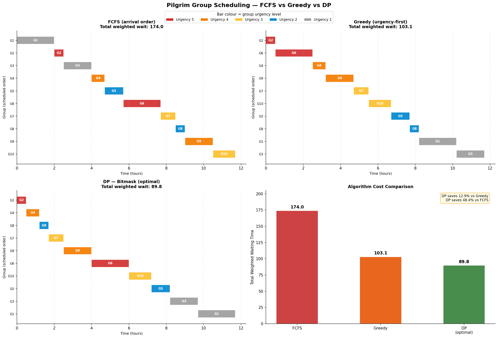
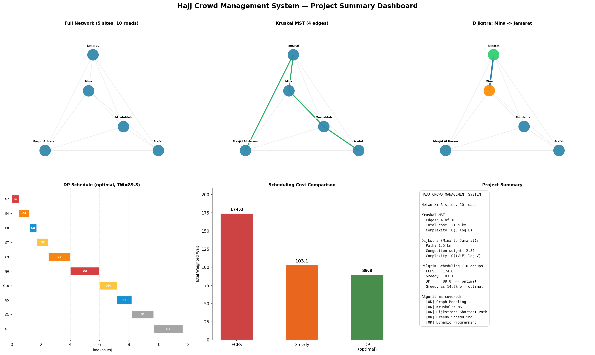

🕋
Hajj Crowd Management System
Algorithmic Optimization of Pilgrim Flow
Algorithm Design & Analysis — Final Project
Faculty of Engineering, Tanta University
[Your Name]
Use arrow keys or space bar to navigate | F11 for fullscreen
The Problem
Fixed
schedule by Islamic ritual
Every Hajj, millions of pilgrims must move between the same five sites at exactly
the same times. There is no flexibility in WHEN people move — only
in HOW they move. This creates extreme, predictable congestion —
exactly the kind of problem algorithms can address.
Real-World Impact
| Year | Event | Deaths |
|---|
| 1990 | Mina Tunnel Stampede | 1,426 |
| 2006 | Jamarat Bridge Stampede | 346 |
| 2015 | Mina Stampede | 2,431 |
These tragedies are routing and scheduling failures — not random
accidents. Better crowd routing algorithms, applied before the event, could reduce
or eliminate such disasters. This is the engineering motivation for our project.
Modeling Hajj as a Graph
- Nodes = Holy sites (5 nodes)
- Edges = Roads between sites (10 edges)
- Distance weight = Road length in km
- Congestion weight = distance × (1 + load%)
- Capacity = max people/hour per road
All distances, capacities, and load values are simulated for academic
demonstration — inspired by published Hajj statistics.
Five Algorithm Techniques
| # | Algorithm | Purpose | Complexity |
|---|
| 1 | Graph Modeling | Represent sites and roads | — |
| 2 | Kruskal's MST | Minimum-cost infrastructure spanning all sites | O(E log E) |
| 3 | Dijkstra's | Congestion-aware shortest path | O((V+E) log V) |
| 4 | Greedy | Fast urgency-based group scheduling | O(n log n) |
| 5 | Dynamic Programming | Optimal group scheduling (bitmask) | O(n × 2ⁿ) |
Kruskal's MST — Minimum Infrastructure
Algorithm steps:
1. Sort all edges by distance (ascending)
2. Pick the cheapest remaining edge
3. If it creates no cycle → add to MST
else → reject it
4. Repeat until N−1 edges are chosen
Cycle detection uses Union-Find with path compression
and union-by-rank — giving near-O(1) amortised operations.
Use case: What is the cheapest set of roads that keeps
all 5 holy sites connected? The MST answers this exactly.
Result: 4 edges chosen from 10 candidates
Total MST cost = 21.5 km
2 edges rejected (cycle detection)
Kruskal's MST — Step-by-Step

4 MST edges (green) | 2 cycle rejections (red dashed) | Total cost: 21.5 km
Dijkstra's — Congestion-Aware Routing
edge weight = distance × (1 + load / 100)
1. dist[source] = 0 ; all others = ∞
2. Push source onto min-heap
3. Pop node u with smallest dist
4. For each neighbour v (unvisited):
if dist[u] + w(u,v) < dist[v]:
relax dist[v], update prev[v]
5. Stop when target is settled
Why congestion-aware? A road at 90% load is penalised more
than a longer but emptier road. The algorithm naturally reroutes pilgrims
away from dangerous bottlenecks.
Route tested: Mina → Jamarat
The Jamarat road has the highest historical death toll — it is the
most critical bottleneck in the entire Hajj network.
Dijkstra's — Mina to Jamarat

Path: Mina → Jamarat | Physical distance: 1.5 km | Congestion-weighted cost: 2.85
Scheduling 10 Pilgrim Groups
- 10 groups must transit Mina–Jamarat one at a time
- Each group has: size, urgency (1–5), processing time (hrs)
- Urgency 5 = elderly, medical emergency, critical
- High-urgency groups with LONG times create the counterexample
Objective: minimise total weighted wait
TW = Σ( urgencyi × waiti )
Three strategies compared:
FCFS → Greedy (urgency-first)
→ DP (bitmask, optimal)
FCFS vs Greedy vs DP — Comparison

The Key Lesson
FCFS — arrival order
174.0
Greedy — urgency-first
103.1 −40.7% vs FCFS
DP — bitmask (optimal)
89.8 −12.9% vs Greedy
Greedy is fast — O(n log n) — but 14.8% worse than optimal.
DP is slower — O(n × 2ⁿ) — but always finds the true minimum.
This is the fundamental trade-off of algorithm design:
speed vs. optimality. There is no free lunch.
Project Summary Dashboard

🙏
Thank You
Questions?
Hajj Crowd Management System
Algorithm Design & Analysis — Faculty of Engineering, Tanta University